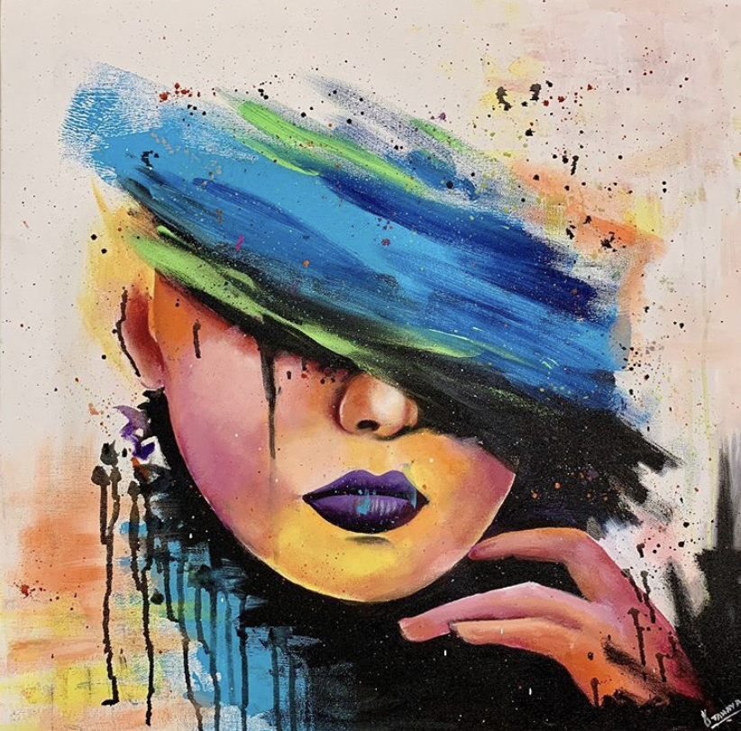
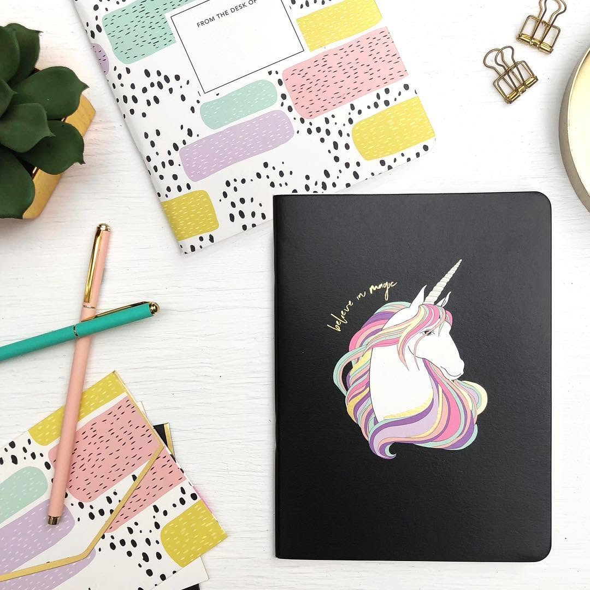
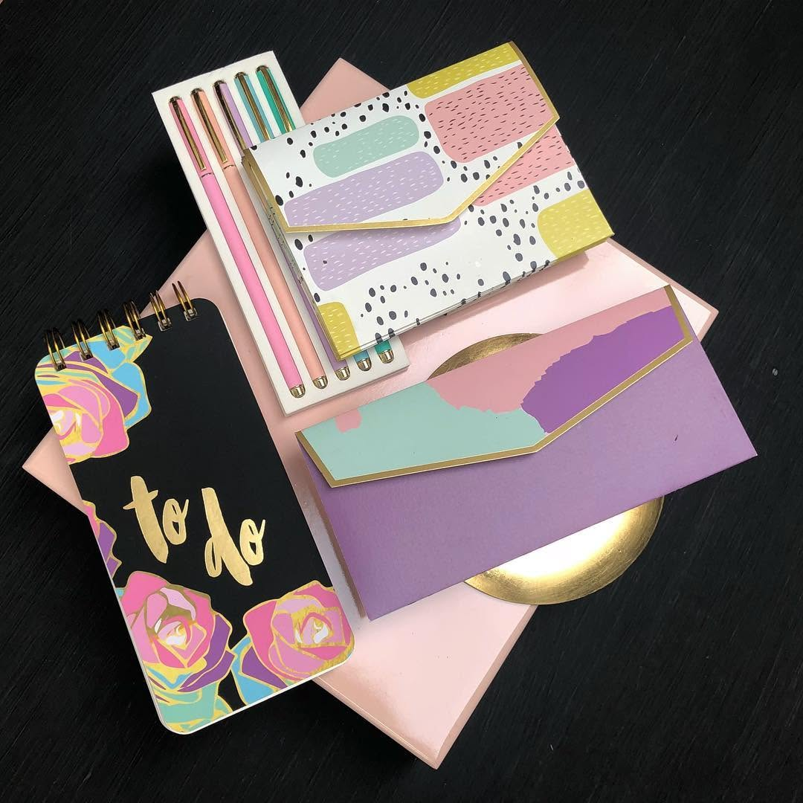
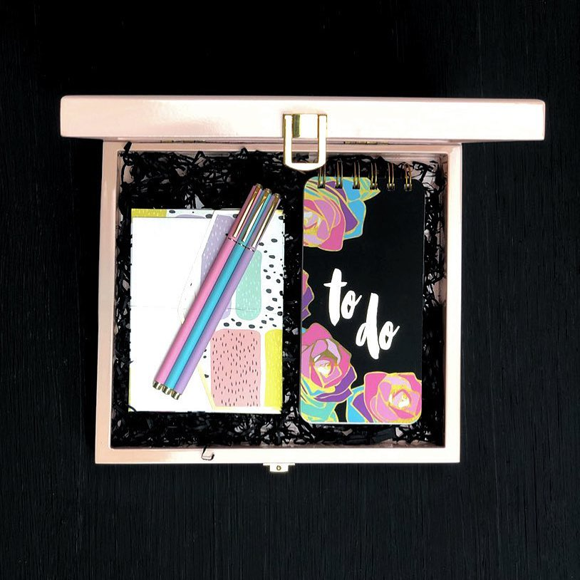
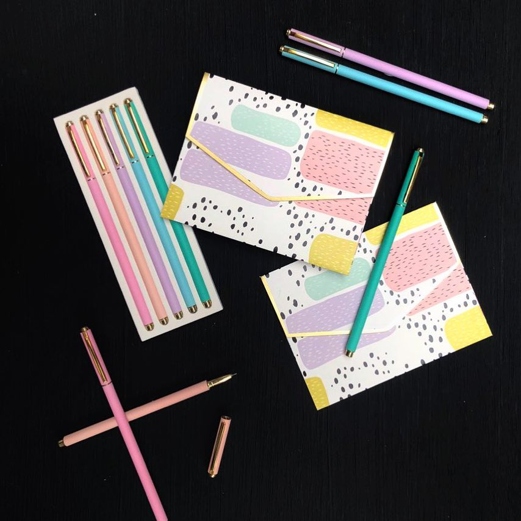

Illustration & Product
A unicorn-themed stationery line for teenagers — illustrated, then styled and shot for launch.

The target audience was teenage girls, so everything about the line needed to feel bold, playful and full of colour: hot pinks, purples, gold accents, bold stripes and patterns — the kind of stationery that actually makes you want to use it. I was involved across the whole process, from research and illustration through to the product shoot and social.

I drew the artwork for the collection and then styled and photographed the promotional imagery myself, which kept the colour of the print and the colour of the photograph in the same register. The sets were built to be shot from above so the patterns stay flat and readable at social crop.


In market
The line launched to market as a boxed stationery set.

Credits — Made at ArtsyDesign.co. Illustration, styling and product photography: Tanaya Agarwal.